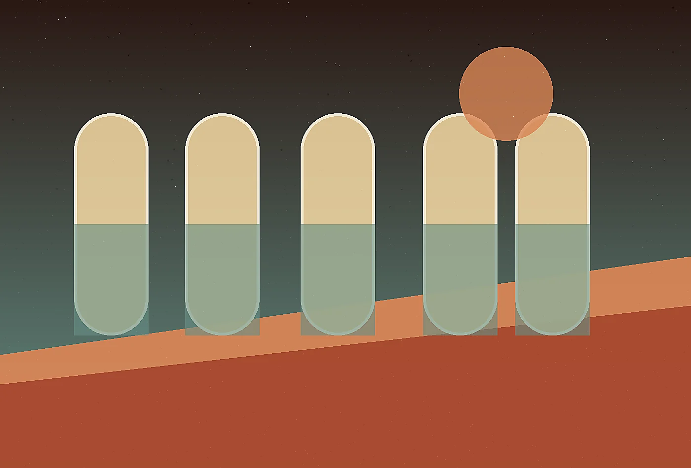

Guests pause before crossing thresholds.

Desert futurist hospitality atelier
Mirage Loom Retreats: desert hospitality woven from silence, shade, and ceremony
Mirage Loom Retreats creates hospitality concepts for remote landscapes where silence is part of the architecture. Desert guests do not arrive as blank consumers; they arrive carrying heat, expectation, altitude, dust, screens, and a longing to feel time change shape. We design the path from first mile to last ember so a retreat can feel both luxurious and grounded. Nothing is added simply to impress. Every shade line, water story, textile, meal rhythm, and night ritual must earn its place.
Design the arrivalOur approach is part brand atelier, part field study, and part operational script. We help owners and developers define what the retreat promises, how that promise appears in built form, and how staff can deliver it without theatrical stiffness. Low-water hospitality is not a constraint to hide; handled honestly, it becomes a signature. A guest who understands why the courtyard cools at dusk, why linens are woven locally, and why the plunge is timed with the sun leaves with a deeper memory than a guest handed generic luxury in a remote location.
We work on boutique resorts, creative residencies, thermal retreats, private camps, and adaptive reuse properties across arid regions. Deliverables include concept books, guest rituals, suite atmospheres, arrival sequences, food and fire programming, material direction, and operating notes. Mirage Loom is for founders who want a desert property to feel inevitable: contemporary yet ancient, refined yet tactile, spare yet emotionally complete.
Mirage Loom also designs for the day after opening. A retreat can have a breathtaking concept and still fail if housekeeping routes, guide language, linen care, and guest pacing are not considered. We make the romance operational so staff can host with confidence after the first reviews arrive.
We pay close attention to maintenance because remote beauty can become fragile when daily work is ignored. The same concept system that describes guest emotion also names storage needs, cleaning rhythms, replacement materials, staff language, and seasonal adjustments, giving the retreat a better chance to remain graceful under real use.
43°
Arrival Heat
The first impression is not the lobby. It is the road dust, the shade at the door, the scent of cooled stone, and the first glass offered before explanation. We choreograph arrival as a gradual exhale.
Shade Grammar
Light moves across fabric like water.
Privacy and cooling become one gesture.

Suite Atmosphere
Suites should not compete with the horizon. We develop palettes, objects, scents, minibar logic, and bedside scripts that support rest while carrying the retreat's point of view.
claywoolsmokecopper

Thermal Ritual
Heat is handled as a medium. We plan plunge timing, towel rituals, hydration prompts, and quiet transitions so spa programs feel native to the climate.
Night Sky Index
- Dim paths before the first stars appear.
- Serve a small bitter drink at the fire circle.
- Let guides explain darkness without over-talking it.
- Return guests to rooms through scent and low light.
Local Hands
We build collaborations with makers, growers, guides, and stewards as operating relationships rather than decorative sourcing claims.
ceramicistweaverforagerastronomerstone mason
Low Water Plan
Guest comfort improves when water choices are honest, beautiful, and clearly explained.
projected landscape demand reductionGuest Arc
arrivalorientationreleaseimmersionreturn
Each guest journey is drawn as an emotional arc, then translated into operations that staff can repeat without losing warmth.
Investment Sandglass
Owners need poetry and numbers. Our concept books include capital priorities, phasing logic, service implications, and brand language that investors can understand.
Questions at Dusk
Do you only work on new builds?
No. Adaptive reuse properties often have the strongest soul when the service concept is clarified.
Can luxury be low water?
Yes, when comfort is designed through shade, timing, texture, and expectation rather than excess.
How local is the sourcing?
Local partnerships are shaped by reliability, respect, and long-term operating fit.
Open the Gate
If the land already has a voice, we can help your retreat learn how to host with it.